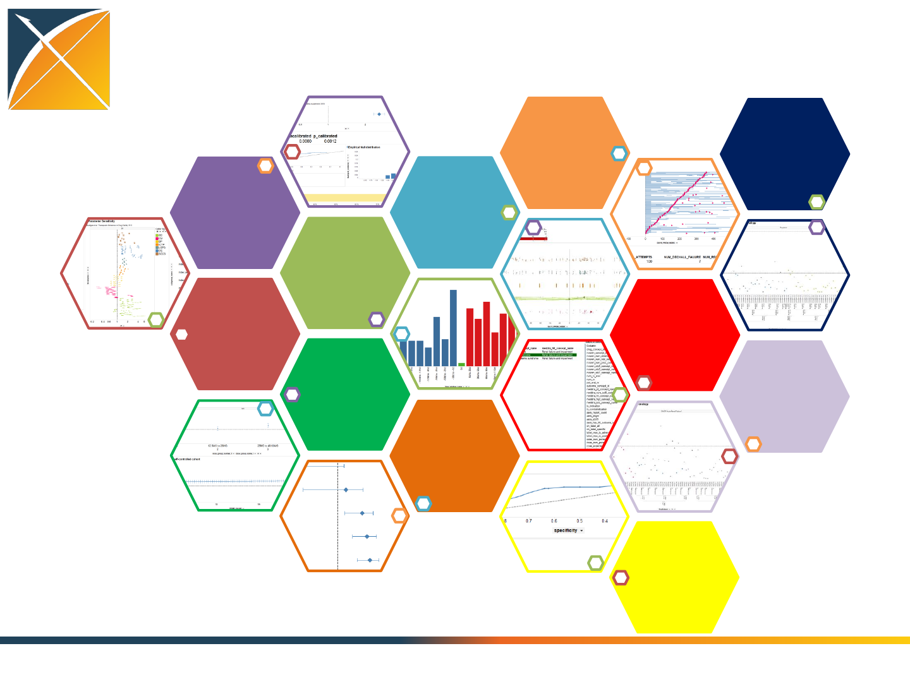
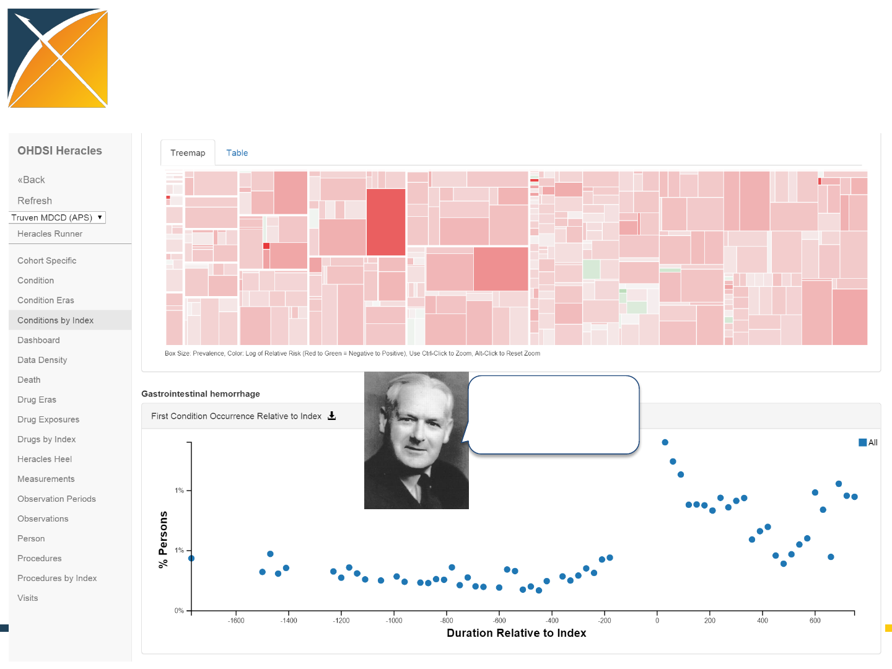
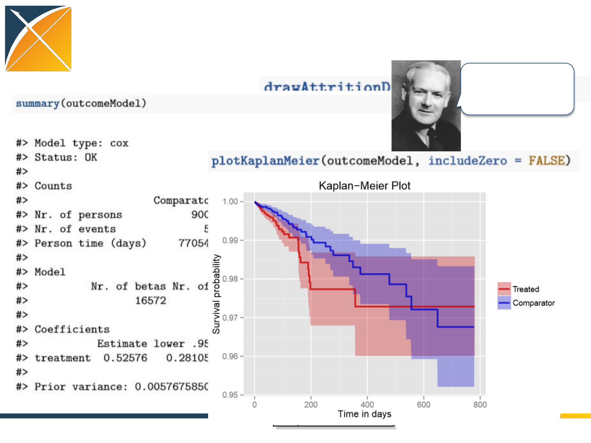

Applying Hill's criteria as a
framework for causal inference
in observational data
Patrick Ryan, PhD
Janssen Research and Development
Columbia University Medical Center
10 June 2015
Perspectives on the role of ‘signal
detection’
Bate ICPE 2014
Platt Brookings 2015
Another perspective on ‘signal
detection’
http://www.independent.co.uk/news/world/europe/sven-sachsalber-
the-artist-literally-looking-for-a-needle-in-a-haystack-9859728.html
Alternative perspective:
Generate evidence to determine the nature
of a causal relationship
p=100%:
We are confident
there IS a causal
relationship
between exposure
and outcome
p(causal relationship)
p=0%:
We are confident
there IS NOT a
causal relationship
between exposure
and outcome
We DON’T KNOW
if there is a causal
relationship
between exposure
and outcome
warfarin-
bleeding
Penicillin-
acute myocardial
infarction
rosiglitazone –
acute myocardial
infarction
rofecoxib –
acute myocardial
infarction
troglitazone –
hepatotoxicity
fluticasone-
bleeding
terazosin-
hepatoxicity
How much evidence do we currently
have?
5
All drugs
All health outcomes of interest
•Strength
•Consistency
•Temporality
•Plausibility
•Experiment
•Coherence
•Biological gradient
•Specificity
•Analogy
To go forward, we must go back
Austin Bradford Hill, “The Environment and Disease:
Association or Causation?,” Proceedings of the Royal
Society of Medicine, 58 (1965), 295-300.
“What aspects of that association should we especially
consider before deciding that the most likely
interpretation of it is causation?”
Role of randomized clinical trials
in evaluating a causal relationship
p=100%:
We are confident
there IS a causal
relationship
between exposure
and outcome
p(causal relationship)
p=0%:
We are confident
there IS NOT a
causal relationship
between exposure
and outcome
We DON’T KNOW
if there is a causal
relationship
between exposure
and outcome
•Strength
•Consistency
•Temporality
•Plausibility
•Experiment
•Biological gradient
•Specificity
Why we don’t know:
•Insufficient number of
persons exposed
•Insufficient length of
exposure
•Inadequate coverage of
exposed population
(for trials with powered
safety endpoints)
•Strength
•Experiment
•Biological gradient
Randomized
clinical trials
Role of spontaneous adverse event data
in evaluating a causal relationship
p=100%:
We are confident
there IS a causal
relationship
between exposure
and outcome
p(causal relationship)
p=0%:
We are confident
there IS NOT a
causal relationship
between exposure
and outcome
We DON’T KNOW
if there is a causal
relationship
between exposure
and outcome
•Strength:
Disproportionality analysis
•Temporality:
cases where exposure before
outcome
•(Natural) Experiment:
Dechallenge/rechallenge
Why we don’t know:
•Differential
underreporting
Spontaneous
adverse event
reporting
Role of observational data
in evaluating a causal relationship
p=100%:
We are confident
there IS a causal
relationship
between exposure
and outcome
p(causal relationship)
p=0%:
We are confident
there IS NOT a
causal relationship
between exposure
and outcome
We DON’T KNOW
if there is a causal
relationship
between exposure
and outcome
•Strength
•Consistency
•Temporality
•Plausibility
•(Natural) Experiment
•Biological gradient
•Specificity
•Analogy
Why don’t we know:
•Incomplete and biased
data capture process
•Non-random treatment
assignment
•Insufficient number of
persons exposed
•Inadequate length of
exposure
•Strength
•Consistency
•Temporality
•Plausibility
•(Natural) Experiment
•Biological gradient
•Specificity
•Analogy
Observational
healthcare
data
Introducing OHDSI
•The Observational Health Data Sciences and
Informatics (OHDSI) program is a multi-
stakeholder, interdisciplinary collaborative to
create open-source solutions that bring out
the value of observational health data through
large-scale analytics
•OHDSI has established an international
network of researchers and observational
health databases with a central coordinating
center housed at Columbia University
10
http://ohdsi.org

OHDSI Communities
Community: a social unit of any size that shares
common values
--http://en.wikipedia.org/wiki/Community
OHDSI’s communities:
•Research
•Open-source software development
•Data network
OHDSI: a global community
OHDSI Collaborators:
•>140 researchers in academia,
industry and government
•>10 countries
OHDSI Data Network:
•>40 databases standardized to
OMOP common data model
•>500 million patients
Global reach of ohdsi.org
•>4600 distinct users from 96 countries in 2015

Evidence OHDSI seeks to generate from
observational data
•Clinical characterization:
–Natural history: Who are the patients who have diabetes?
Among those patients, who takes metformin?
–Quality improvement: what proportion of patients with
diabetes experience disease-related complications?
•Population-level estimation
–Safety surveillance: Does metformin cause lactic acidosis?
–Comparative effectiveness: Does metformin cause lactic
acidosis more than glyburide?
•Patient-level prediction
–Given everything you know about me and my medical
history, if I start taking metformin, what is the chance that I
am going to have lactic acidosis in the next year?
Opportunities for standardization in the
evidence generation process
•Data structure : tables, fields, data types
•Data content : vocabulary to codify clinical domains
•Data semantics : conventions about meaning
•Cohort definition : algorithms for identifying the set of
patients who meet a collection of criteria for a given
interval of time
•Covariate construction : logic to define variables
available for use in statistical analysis
•Analysis : collection of decisions and procedures
required to produce aggregate summary statistics from
patient-level data
•Results reporting : series of aggregate summary
statistics presented in tabular and graphical form
Protocol
The odyssey to evidence generation
Patient-level
data in source
system/ schema
evidence
Concept
Concept_relationship
Concept_ancestor
Vocabulary
Source_to_concept_map
Relationship
Concept_synonym
Drug_strength
Cohort_definition
Standardized vocabularies
Attribute_definition
Domain
Concept_class
Cohort
Dose_era
Condition_era
Drug_era
Cohort_attribute
Standardized
derived elements
Standardized clinical data
Drug_exposure
Condition_occurrence
Procedure_occurrence
Visit_occurrence
Measurement
Procedure_cost
Drug_cost
Observation_period
Payer_plan_period
Provider
Care_siteLocation
Death
Visit_cost
Device_exposure
Device_cost
Observation
Note
Standardized health system data
Fact_relationship
Specimen
CDM_source
Standardized meta-data
Standardized health
economics
Drug safety surveillance
Device safety surveillance
Vaccine safety surveillance
Comparative effectiveness
Health economics
Quality of care Clinical research
One model, multiple use cases
Person
Preparing your data for analysis
Patient-level
data in source
system/ schema
Patient-level
data in
OMOP CDM
ETL
design
ETL
implement ETL test
WhiteRabbit:
profile your
source data
RabbitInAHat:
map your source
structure to
CDM tables and
fields
ATHENA:
standardized
vocabularies
for all CDM
domains
ACHILLES:
profile your
CDM data;
review data
quality
assessment;
explore
population-
level summaries
OHDSI tools built to help
CDM:
DDL, index,
constraints for
Oracle, SQL
Server,
PostgresQL;
Vocabulary tables
with loading
scripts
http://github.com/OHDSI
OHDSI Forums:
Public discussions for OMOP CDM Implementers/developers
Usagi:
map your
source codes
to CDM
vocabulary
Single study
Real-time query
Large-scale analytics
Data Evidence sharing paradigms
Patient-level
data in
OMOP CDM
evidence
Write
Protocol
Develop
code
Execute
analysis
Compile
result
Develop
app
Design
query
Submit
job
Review
result
Develop
app
Execute
script
Explore
results
One-time Repeated
Standardized large-scale analytics tools
under development within OHDSI
Patient-level
data in
OMOP CDM
http://github.com/OHDSI
ACHILLES:
Database
profiling
CIRCE:
Cohort
definition
HERACLES:
Cohort
characterization
OHDSI Methods Library:
CYCLOPS
CohortMethod
SelfControlledCaseSeries
SelfControlledCohort
TemporalPatternDiscovery
Empirical Calibration
HERMES:
Vocabulary
exploration
LAERTES:
Drug-AE
evidence base
HOMER:
Population-level
causality
assessment
PLATO:
Patient-level
predictive
modeling
CALYPSO:
Feasibility
assessment

Consistency
Temporality
Strength Plausibility
Experiment
Coherence
Biological
gradient Specificity
Analogy
Comparative
effectiveness
Predictive
modeling
HOMER implementation of Hill’s viewpoints
http://omop.org/2013Symposium
Motivating example to see the
OHDSI tools in action
ACHILLES: Database characterization to examine if
the data have the elements required for the
analysis
HERMES: Explore the standardized vocabularies to
define exposures, outcomes, and covariates
CIRCE: Define cohorts of interest
CALYPSO: Conduct feasibility assessment to
evaluate the impact of study inclusion criteria
Consistency

HERACLES: Characterize the cohorts of
interest
Specificity

HERACLES: Characterize the cohorts of
interest
Temporality

LAERTES: Summarizing evidence from
existing data sources: literature, labeling,
spontaneous reporting
Coherence
Analogy
Standardizing analytic decisions in
cohort studies
Decisions a researcher needs to make
parameters a standardized analytic routine needs to accommodate:
1. Washout period length
2. Nesting cohorts within indication
3. Comparator population
4. Time-at-risk
5. Propensity score covariate selection strategy
6. Covariate eligibility window
7. Propensity score adjustment strategy (trimming, stratification, matching)
8. Outcome model

Open-source large-scale analytics
through R
Why is this a novel approach?
•Large-scale analytics,
scalable to ‘big data’
problems in healthcare:
•millions of patients
•millions of covariates
•millions of questions
•End-to-end analysis, from
CDM through evidence
•No longer de-coupling
‘informatics’ from
‘statistics’ from
‘epidemiology’
Standardize covariate construction
Standardize model diagnostics
Plausibility

Standardize analysis and results
reporting
Strength

Concluding thoughts
•Our goal shouldn’t just “signal detection”: we need to
enable reliable, scalable evidence generation for
population-level estimation for all medical products
and all outcomes of interest
•Hill’s causal viewpoints can provide a valuable
framework and logical bridge to connect observational
evidence with clinical expertise
•Open-source large-scale analytics on a common data
platform are required to facilitate efficient,
transparent, and reproducible science
•A multi-disciplinary, community approach can greatly
accelerate the research and development of shared
solutions
Join the journey
Interested in OHDSI?
Questions or comments?
Contact:
ryan@ohdsi.org
38